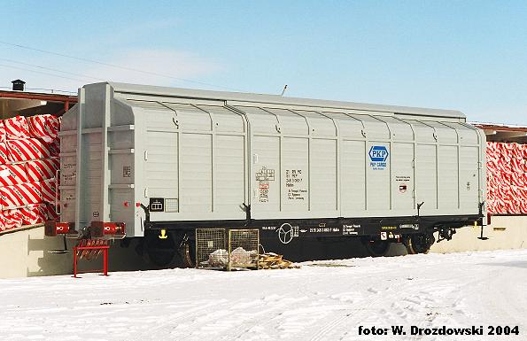
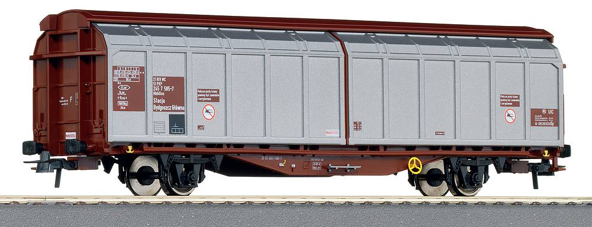
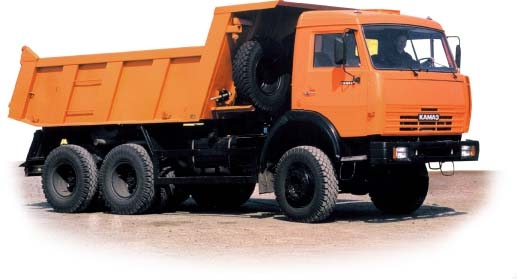
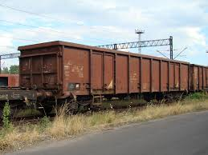
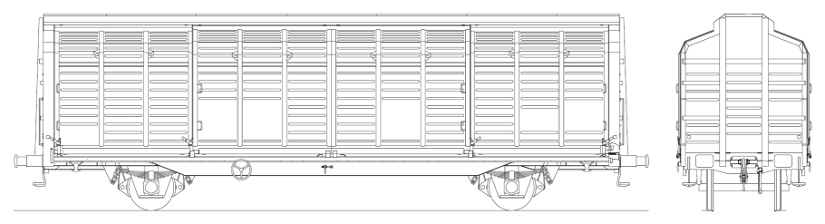
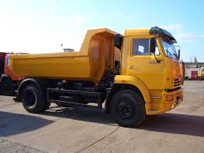

TRANSPORT 2018
samochody i urządzenia przeładunkowe

DAF FTXF 105 .460
Qt=28,3t

EAOS C
Qt=60t
 FALNS C
FALNS C
Qt=53.5t
 FARESIN FH 9.30
FARESIN FH 9.30
Wydajność teoretyczna: 75t/h

HBIKKS C
Qt=23t

HBILLNS C
Qt=55.5t
 JCB 416
JCB 416
Wydajność teoretyczna: 75t/h
 KAMAZ 65201 wywrotka
KAMAZ 65201 wywrotka
Qt=26t
 KAMAZ 65401 skrzyniowy
KAMAZ 65401 skrzyniowy
Qt=20t

KAMAZ 65111 wywrotka
Qt=15t
 KOMATSU WA 480-6
KOMATSU WA 480-6
Wydajność teoretyczna: 90t/h
 PUZZ 500.34 ładowarka zgarniakowa
PUZZ 500.34 ładowarka zgarniakowa
Wydajność teoretyczna: 500t/h
 STILL RX 70-16
STILL RX 70-16
Wydajność teoretyczna: 50t/h
 STILL RX 70-18
STILL RX 70-18
Wydajność teoretyczna: 60t/h
 STILL RX 70-20
STILL RX 70-20
Wydajność teoretyczna: 70t/h
 ZOS 700.25 zwałow arka
ZOS 700.25 zwałow arka
Wydajność teoretyczna: 700t/h
 ZOS 700.34 zwałow arka
ZOS 700.34 zwałow arka
Wydajność teoretyczna: 700t/h
 PUZ 200.15 ładowarka zgarniakowa
PUZ 200.15 ładowarka zgarniakowa
Wydajność teoretyczna: 200t/h
 DAF HDS
DAF HDS

EANS 421
 HBIKKLLS 217
HBIKKLLS 217

HBIKKS

KAMAZ 53605
 SCANIA HDS600
SCANIA HDS600
 Ładowarka zgarniakowa
Ładowarka zgarniakowa
Wydajność teoreyczna : 300t/h
 Wózek widłowy STILL RX 50 Wydajność teoretyczna :50t/h
Wózek widłowy STILL RX 50 Wydajność teoretyczna :50t/h
 Wózek widłowy STILL RX 6 Wydajność teoretyczna :60t/h
Wózek widłowy STILL RX 6 Wydajność teoretyczna :60t/h
 Wózek widłowy STILL RX 20 Wydajność teoretyczna :40t/h
Wózek widłowy STILL RX 20 Wydajność teoretyczna :40t/h
 Ładowarka teleskopowa TL 1500 Wydajność teoretyczna :90t/h
Ładowarka teleskopowa TL 1500 Wydajność teoretyczna :90t/h
 JCB 410 ładowarka Wydajność teoretyczna :75t/h
JCB 410 ładowarka Wydajność teoretyczna :75t/h
 Manitou 634 ładowarka Wydajność teoretyczna :80t/h
Manitou 634 ładowarka Wydajność teoretyczna :80t/h
 Eaos typ C Qt=60t
Eaos typ C Qt=60t
 Eanos typ C Qt=50t
Eanos typ C Qt=50t
 Kbkk typ C Qt=24t
Kbkk typ C Qt=24t
 Sggrs typ C Qt=88t
Sggrs typ C Qt=88t
Scs typ C Qt=51.5t
 Sgs typ C Qt=50t
Sgs typ C Qt=50t